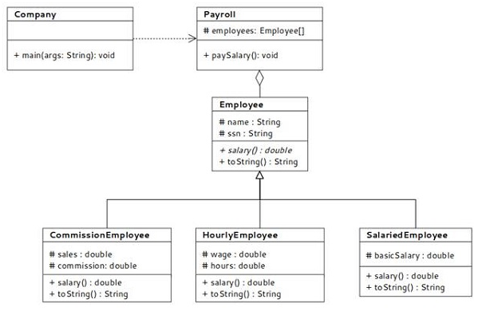

多态是面向对象软件的基本原理之一。该术语通常表示可以具有多种形式的事物。在面向对象的方法中，多态使编写具有后期绑定引用的程序成为可能。尽管在Java中创建多态引用很容易，但其背后的概念对整体编程产生了更深远的影响。本文结合在优锐课学习到的知识点，探讨了有关多态性及其对面向对象编程的影响的一些复杂细节。
多态引用是一个变量，可以在不同的时间点引用不同类型的对象。它通常与它所引用的类兼容。 例如，在以下情况下：
Employee employee;
'employee'是一个引用变量，可以引用Employee类的实例。参考变量对参考对象的限定取决于其兼容性。这似乎是唯一可靠的条件，但事实并非如此，特别是在实现多态时。规则太严格了，但是通过结合“具有多种形式”的思想，多态性使得灵活性更高。这意味着多态引用保证了它可以在不同的时间点引用不同类型的对象，而不是为兼容性而完全依赖。因此，如果可以在一个时间点使用引用来调用方法，则可以将其动态更改为指向另一个对象，并在下一次调用其他方法。通过提供引用变量的另一个使用维度，这可以利用灵活性。
当引用变量绑定到无法在运行时更改的对象时，或者换句话说，方法调用与方法定义的绑定是在编译时完成的，称为静态绑定。如果绑定在运行时是可更改的，例如在多态引用的情况下，绑定的决策仅在执行期间做出，则称为动态绑定或后期绑定。两者在面向对象程序设计中都有其用途，并非一个都胜过另一个。但是，在多态引用的情况下，推迟的绑定承诺在灵活性方面使其比编译时绑定更具优势，但另一方面，这会降低性能开销。但是，这在很大程度上是可以接受的，并且在提高效率方面，开销通常具有很小的吸引力。.
在Java中，可以通过两种方式创建多态引用：使用继承或使用接口。
引用变量引用类的实例。对于继承层次结构，如果引用变量在层次结构树中声明为父类类型，则引用对象可以指向层次结构中任何类的实例。这意味着，在Java中，因为Objectclass是所有类的父类或超类，或者换句话说，Java中的所有类实际上是Object类的子类隐式或显式地是对象类的引用变量。对象类型可以引用Java中的任何类实例。这就是我们的意思。
1 Employee employee;
2 Object object;
3 employee = new Employee();
4 object = employee; // This is a valid assignment
如果情况相反，则如下所示：
1 Employee employee;
2 Object object = new Object();
3 employee = (Employee)object // Valid, but needs explicit cast
观察到它需要显式强制转换；只有这样，它才能成为有效的声明。可以看出，这种反向分配对于在许多情况下出现问题的边缘来说没有多大用处。这是因为Object实例的功能与Employee引用变量预期的功能几乎没有关系。关系is-a可以从employee-is-an-object派生派生；在这种情况下，相反的关系（例如，对象是雇员）太牵强。
让我们尝试借助示例来理解它。

图1：从驱动程序类，公司派生的类
称为Company的驱动程序类创建一个雇员列表，并调用paySalary()方法。薪资类维护公司中不同类型员工的列表。请注意，该数组被声明为派生自Employee类（所有雇员子类的父级或超类）的引用变量的数组。结果，可以用从Employee类的任何子类（例如CommissionEmployee, HourlyEmployee, SalariedEmployee）创建的对象引用填充数组。在paySalary()定义中，根据数组中的对象引用调用适当的salary()方法。因此，对salary()方法的调用是多态的，很明显，每个类都有其自己版本的salary()方法。
Payroll类中的employee数组不代表特定类型的Employee。它用作可以指向任何类型的Employee子类引用的句柄。尽管继承的类共享作为后代继承的一些公共数据，但是它们具有各自的属性集。
这是该示例在Java中的快速实现。
1 package org.mano.example;
2 public class Company
3 {
4 public static void main( String[] args )
5 {
6 Payroll payroll = new Payroll();
7 payroll.paySalary();
8 }
9 }
10 package org.mano.example;
11 import java.util.ArrayList;
12 import java.util.List;
13 public class Payroll {
14 private List<Employee> employees =
15 new ArrayList<>();
16 public Payroll() {
17 employees.add(new
18 SalariedEmployee("Harry Potter",
19 "123-234-345",7800));
20 employees.add(new
21 CommissionEmployee("Peter Parker",
22 "234-345-456",2345.67,0.15));
23 employees.add(new
24 HourlyEmployee("Joker Poker",
25 "456-567-678",562.36,239.88));
26 }
27 public void paySalary() {
28 for (Employee e: employees) {
29 System.out.println
30 ("----------------------------------------------------");
31 System.out.println(e.toString());
32 System.out.printf
33 ("Gross payment: $%,.2f\n",e.salary());
34 System.out.println
35 ("----------------------------------------------------");
36 }
37 }
38 }
39
40 package org.mano.example;
41
42 public abstract class Employee {
43 protected String name;
44 protected String ssn;
45 public Employee(String name, String ssn) {
46 this.name = name;
47 this.ssn = ssn;
48 }
49 public String getName() {
50 return name;
51 }
52 public void setName(String name) {
53 this.name = name;
54 }
55 public String getSsn() {
56 return ssn;
57 }
58 public void setSsn(String ssn) {
59 this.ssn = ssn;
60 }
61 @Override
62 public String toString() {
63 return String.format("%s\nSSN: %s",
64 getName(),getSsn());
65 }
66 public abstract double salary();
67 }
68
69 package org.mano.example;
70 public class SalariedEmployee extends Employee {
71 protected double basicSalary;
72 public SalariedEmployee(String name, String ssn,
73 double basicSalary) {
74 super(name, ssn);
75 setBasicSalary(basicSalary);
76 }
77 public double getBasicSalary() {
78 return basicSalary;
79 }
80 public void setBasicSalary(double basicSalary) {
81 if(basicSalary>= 0.0)
82 this.basicSalary = basicSalary;
83 else
84 throw new IllegalArgumentException("basic " +
85 "salary must be greater than 0.0");
86 }
87 @Override
88 public double salary() {
89 eturn getBasicSalary();
90 }
91 @Override
92 public String toString() {
93 return String.format("%s\nBasic Salary: $%,.2f",
94 super.toString(),getBasicSalary());
95 }
96 }
97
98 package org.mano.example;
99 public class HourlyEmployee extends Employee {
100 protected double wage;
101 protected double hours;
102 public HourlyEmployee(String name, String ssn,
103 double wage, double hours) {
104 super (name, ssn);
105 setWage(wage);
106 setHours(hours);
107 }
108 public double getWage() {
109 return wage;
110 }
111 public void setWage(double wage) {
112 if(wage >= 0.0)
113 this.wage = wage;
114 else
115 throw new IllegalArgumentException("wage " +
116 "must be > 0.0");
117 }
118 public double getHours() {
119 return hours;
120 }
121 public void setHours(double hours) {
122 if(hours >= 0.0)
123 this.hours = hours;
124 else
125 throw new IllegalArgumentException("hours " +
126 "must be > 0.0");
127 }
128 @Override
129 public double salary() {
130 return getHours() * getWage();
131 }
132 @Override
133 public String toString() {
134 return String.format("%s\nWage: $%,
135 .2f\nHours worked: %,.2f",
136 super.toString(),getWage(),getHours());
137 }
138 }
139
140 package org.mano.example;
141 public class CommissionEmployee extends Employee {
142 protected double sales;
143 protected double commission;
144 public CommissionEmployee(String name, String ssn,
145 double sales, double commission) {
146 super(name, ssn);
147 setSales(sales);
148 setCommission(commission);
149 }
150 public double getSales() {
151 return sales;
152 }
153 public void setSales(double sales) {
154 if(sales >=0.0)
155 this.sales = sales;
156 else
157 throw new IllegalArgumentException("Sales " +
158 "must be >= 0.0");
159 }
160 public double getCommission() {
161 return commission;
162 }
163 public void setCommission(double commission) {
164 if(commission > 0.0 && commission < 1.0)
165 this.commission = commission;
166 else
167 throw new IllegalArgumentException("Commission " +
168 "must be between 0.0 and 1.0");
169 }
170 @Override
171 public double salary() {
172 return getCommission() * getSales();
173 }
174 @Override
175 public String toString() {
176 return String.format("%s\nSales: %,
177 .2f\nCommission: %,.2f",
178 super.toString(),getSales(),getCommission());
179 }
180 }
接口的多态性与前面的示例非常相似，不同之处在于，这里的多态性规则是根据Java接口指定的规范进行的。接口名称可以用作引用变量，就像我们对上面的类名称所做的那样。它引用实现该接口的任何类的任何对象。这是一个例子。
1 package org.mano.example;
2 public interface Player {
3 public enum STATUS{PLAY,PAUSE,STOP};
4 public void play();
5 public void stop();
6 public void pause();
7 }
8
9 package org.mano.example;
10 public class VideoPlayer implements Player {
11 private STATUS currentStatus = STATUS.STOP;
12 @Override
13 public void play() {
14 if(currentStatus == STATUS.STOP ||
15 currentStatus == STATUS.PAUSE) {
16 currentStatus = STATUS.PLAY;
17 System.out.println("Playing Video...");
18 }
19 else
20 System.out.println("I am ON playing man!");
21 }
22 @Override
23 public voidstop() {
24 if(currentStatus == STATUS.PLAY ||
25 currentStatus == STATUS.PAUSE) {
26 currentStatus = STATUS.STOP;
27 System.out.println("Video play stopped.");
28 }
29 else
30 System.out.println("Do you want me to go fishing?");
31 }
32 @Override
33 public void pause() {
34 if(currentStatus == STATUS.PLAY) {
35 currentStatus = STATUS.PAUSE;
36 System.out.println("Video play paused.");
37 }
38 else
39 System.out.println("I'm a statue. You froze me
40 already!");
41 }
42 }
43
44 package org.mano.example;
45 public class AudioPlayer implements Player {
46 private STATUS currentStatus = STATUS.STOP;
47 @Override
48 public void play() {
49 if(currentStatus == STATUS.STOP ||
50 currentStatus == STATUS.PAUSE) {
51 currentStatus = STATUS.PLAY;
52 System.out.println("Playing Audio...");
53 }
54 else
55 System.out.println("I am ON playing man!");
56 }
57 @Override
58 public void stop() {
59 if(currentStatus == STATUS.PLAY ||
60 currentStatus == STATUS.PAUSE) {
61 currentStatus = STATUS.STOP;
62 System.out.println("Audio play stopped.");
63 }
64 else
65 System.out.println("Do you want me to go fishing?");
66 }
67 @Override
68 public void pause() {
69 if(currentStatus == STATUS.PLAY) {
70 currentStatus = STATUS.PAUSE;
71 System.out.println("Audio play paused.");
72 }
73 else
74 System.out.println("I'm a statue. You froze me
75 already!");
76 }
77 }
78
79 package org.mano.example;
80 public class PlayerApp {
81 public static void main(String[] args) {
82 Player player= new VideoPlayer();
83 player.play();
84 player.pause();
85 player.stop();
86 player= new AudioPlayer();
87 player.play();
88 player.pause();
89 player.stop();
90 }
91 }
请注意，在PlayerApp中，我们已经使用接口Player来声明对象引用变量。引用变量player可以引用实现Player接口的任何类的任何对象。为了证明这一点，我们在这里使用了同一播放器变量来引用VideoPlayer对象和AudioPlayer对象。运行时调用的方法是特定于其引用的类对象的方法。实现接口的类与接口本身之间的关系是父子关系，正如我们在带有继承的多态示例中所看到的。它也是一个is-arelationship，并构成了多态性的基础。
通过类继承或通过接口实现多态性之间的差异是一个选择问题。实际上，区别在于理解类和接口的属性和特性。除了了解其性质外，没有严格的规则来定义何时使用。这超出了本文的范围。但是，在多态中，这个想法既适合并且也有能力完成我们想对它们进行的操作。就这样。抽丝剥茧，细说架构那些事——【优锐课】